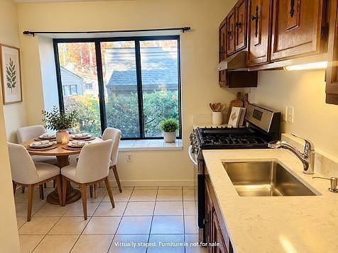
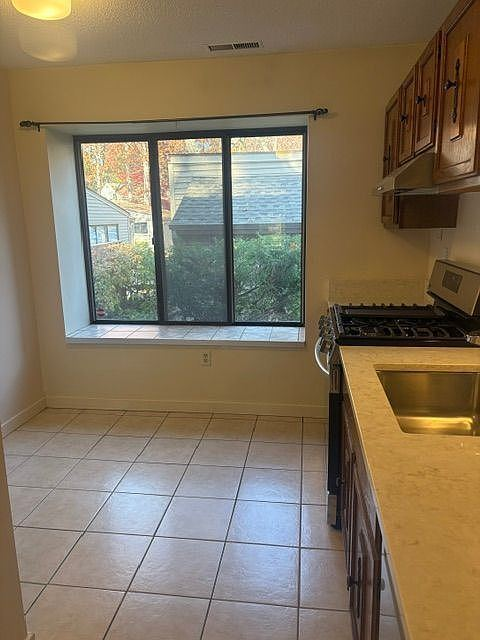
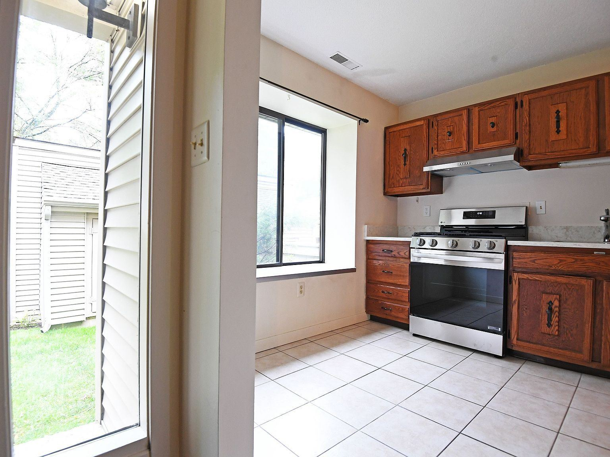
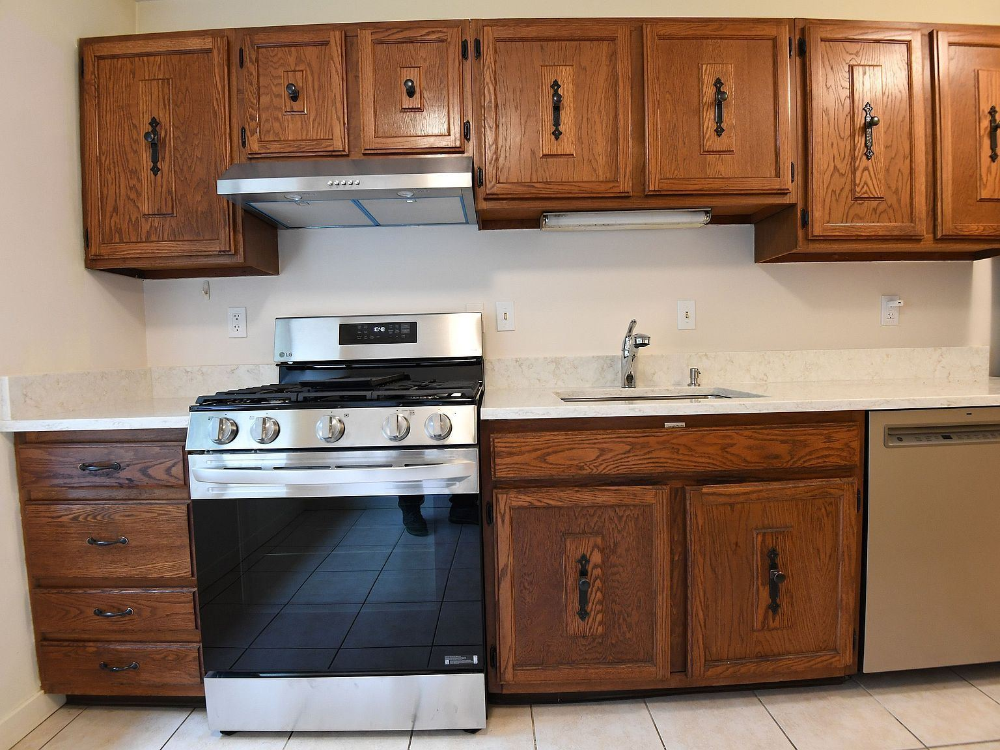
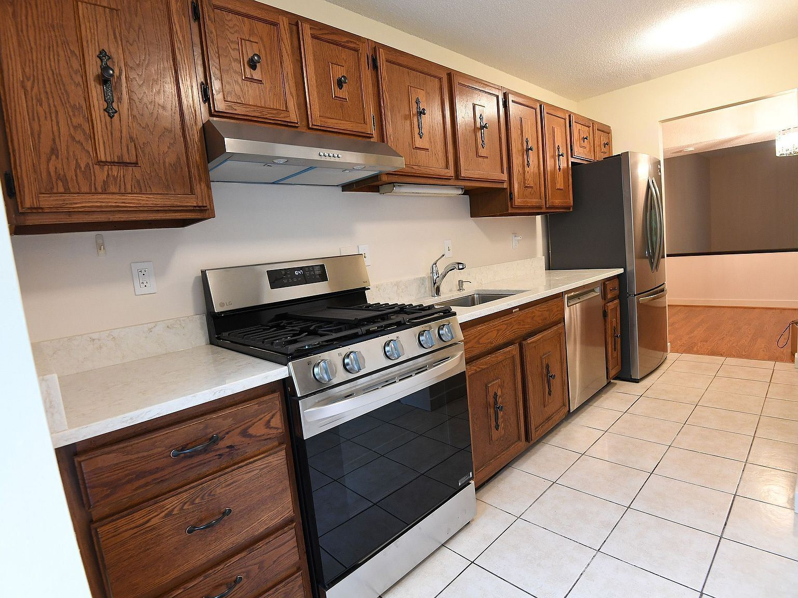
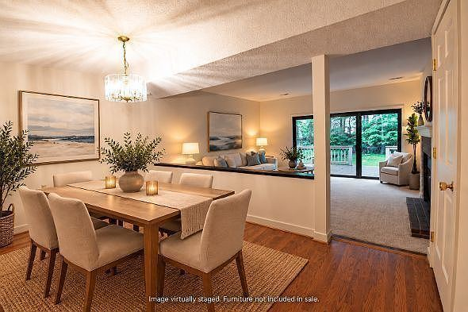
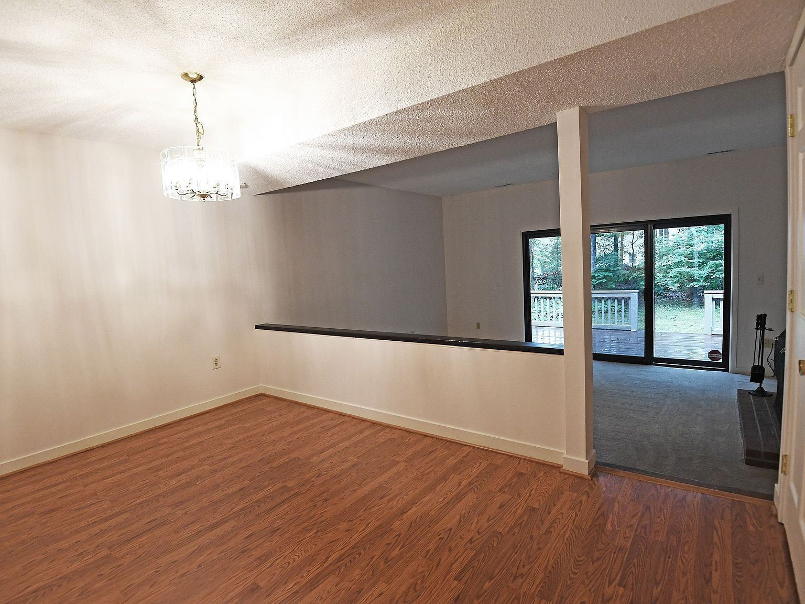

Take a look inside







Photos from the owner's listing.
Top 3 reasons to love this home
- Room to liveA single-family home with 2 bedrooms, 2 baths, 1,872 sq ft — about $184 per square foot, priced at $345,000.
- Farmington locationLife in Farmington means UConn Health and a strong professional job base, plus the Farmington River Trail and river access in Unionville.
- A town on the moveShopping at Westfarms and quick access to I-84 — and new investment like “Polly's Pier to restore accessible river access in Unionville” is adding to what's nearby.
What's happening in Farmington
- Polly's Pier to restore accessible river access in UnionvilleThe Farmington Land Trust is building an 80-foot accessible fishing pier and viewing platform on the Farmington River off the Farmington River Trail.
- New developer plans apartments at 19 Perry Street in UnionvilleBelfonti has shown plans for roughly 220 to 230 apartments on a long-vacant former factory lot, which would also trigger its environmental cleanup.
- Town plan update: open house set for Dec. 1Farmington is gathering input for its 10-year Plan of Conservation and Development, with a public open house Dec. 1 at the Senior Center.
Who this home is perfect for
A first-time buyer, couple, or downsizer who wants a manageable home in Farmington with a yard of their own rather than a shared building. They value convenience — UConn Health and a strong professional job base — and a price that keeps monthly costs in check.
Listing details: view on Zillow. Facts shown are as posted by the owner; buyers should verify all details.
If the calls, showings, and marketing start to pile up, I'm happy to take them off your hands — open houses, tours, mailers, and social ads included.
Call Melissa now860-480-4169G
★★★★★
Click here to see my Google reviews